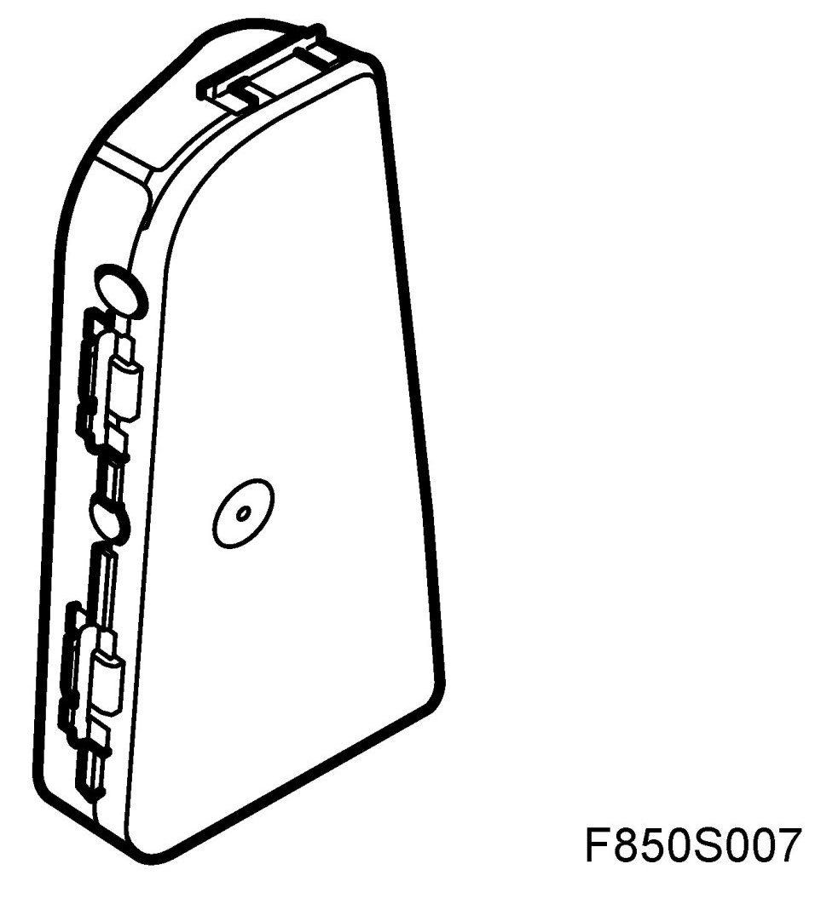
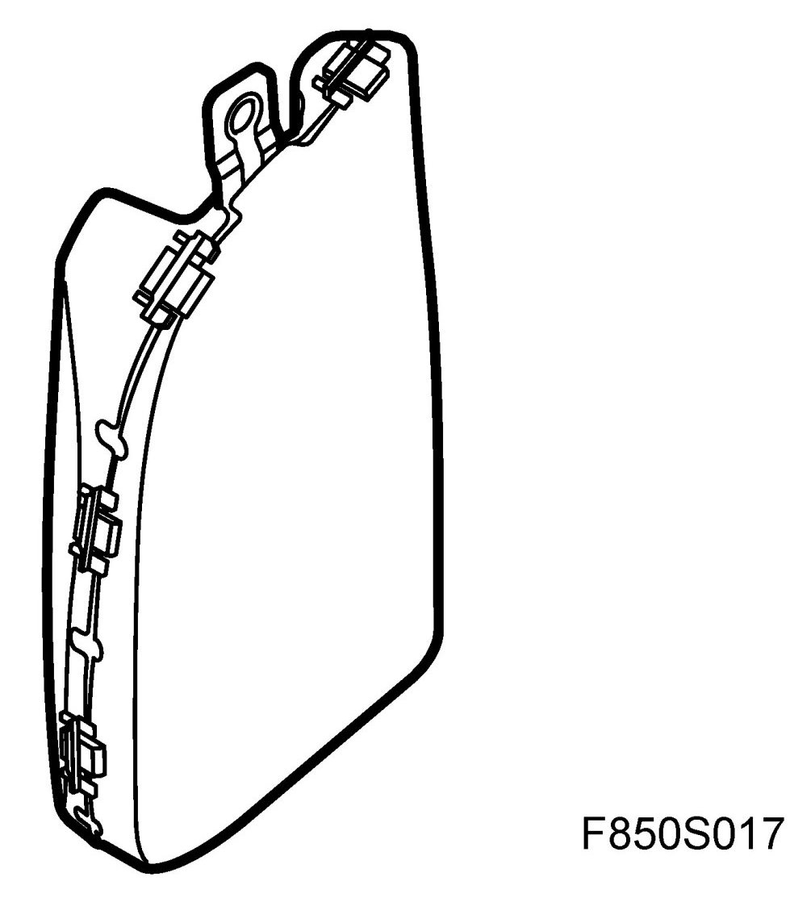
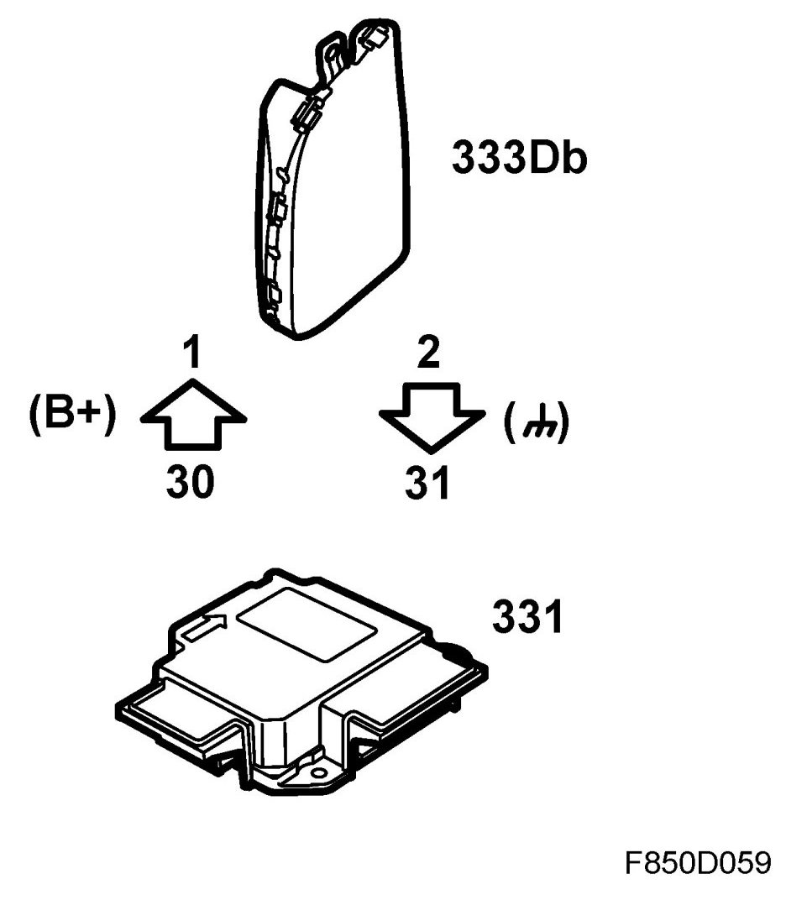
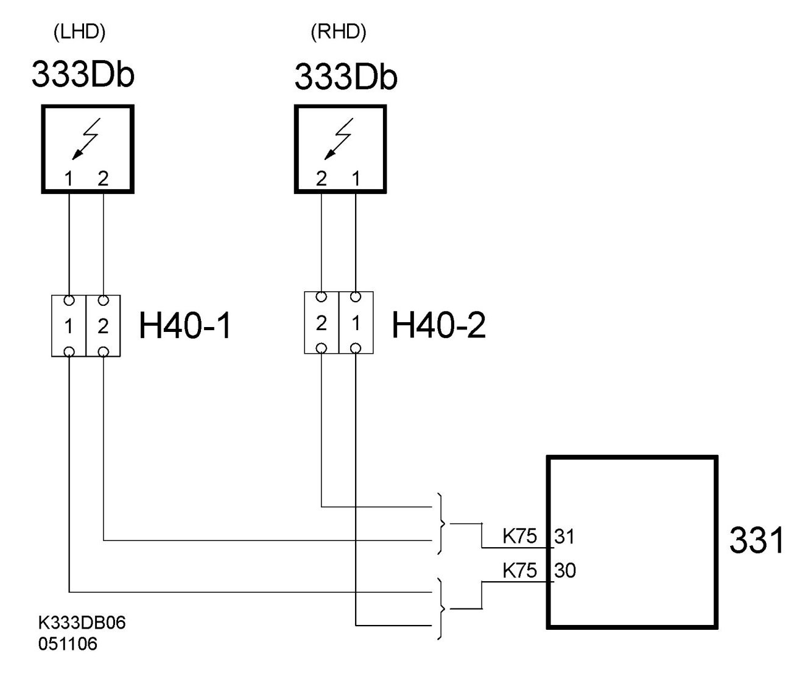
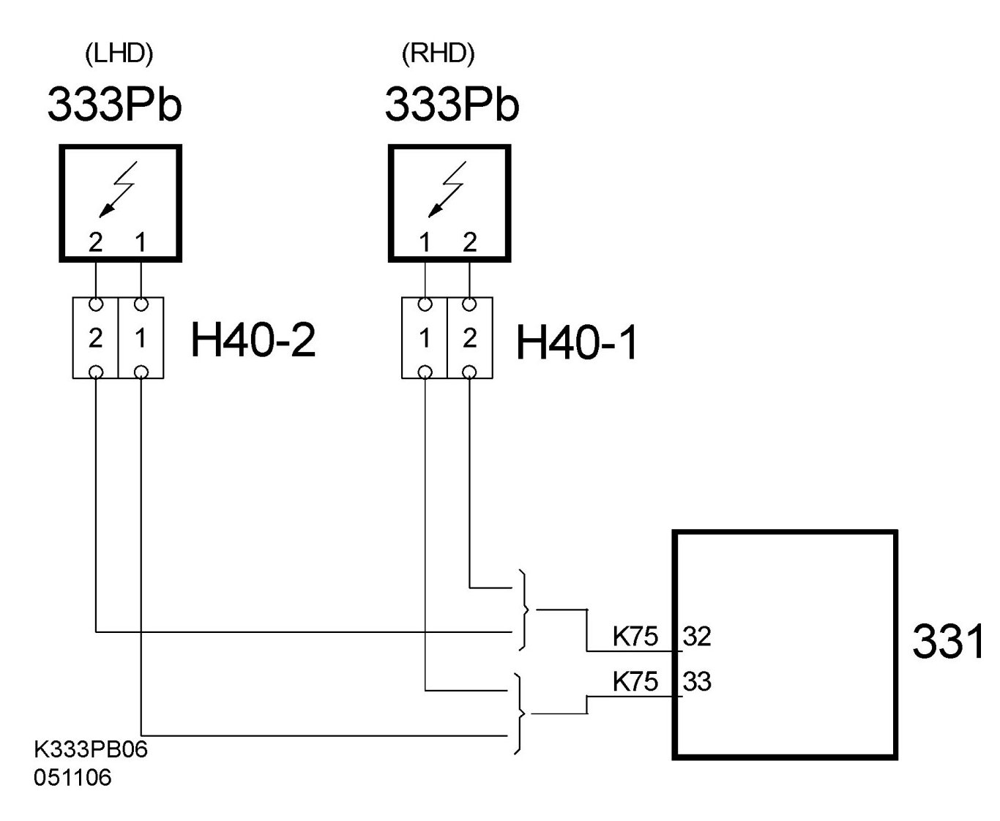

Airbag, Side (333Db, 333Pb)
Airbag, Side (333Db, 333Pb)
Location
Airbag, side, driver (333Db)
Airbag, side, passenger, front (333Pb)
4D

CV

Main task
The purpose of the side airbag is to reduce the effects of a side impact with an airbag which inflates between the passenger's upper body and the door.
The side airbags are specific to the seat and the car they are fitted in:
- Driver, LHD and RHD.
- Passenger, LHD and RHD.
Type
The side airbag consists of a bag and gas generator. The bag is protected by a plastic casing and is mounted in the seat frame with a bracket.
The gas generator consists of a steel housing with an electric detonator, explosive charges, pressurised gas and a gas distribution unit for gas cooling and pressure distribution.
The gas mixture is 95% argon and 5% helium.
Connect
Driver. Pin 30 receives B+ current from the control module during activation. Grounding occurs via pin 31 on the control module.


Passenger: Pin 33 receives B+ current from the control module during activation. Grounding occurs via pin 32 on the control module.
